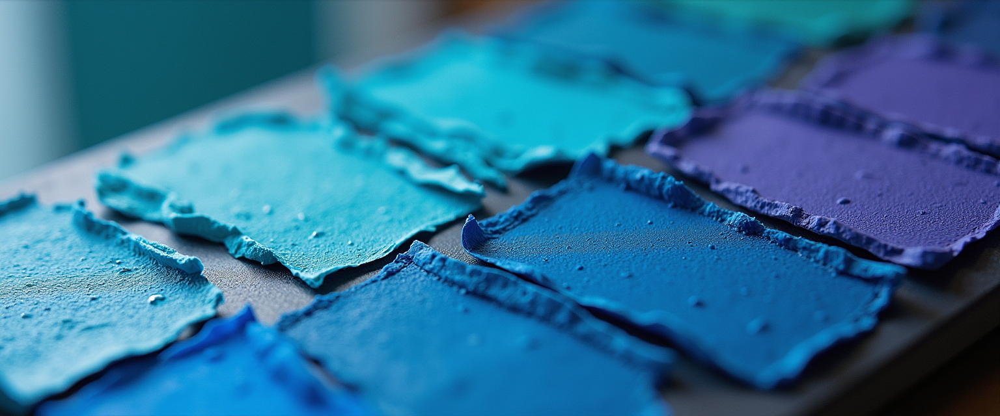
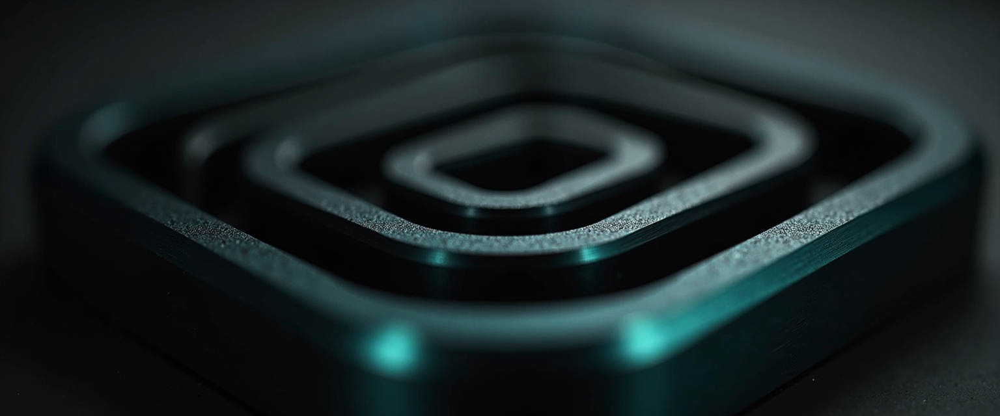
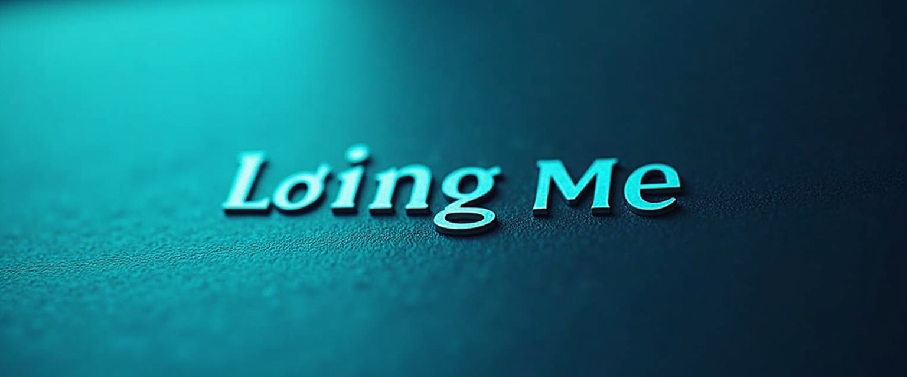
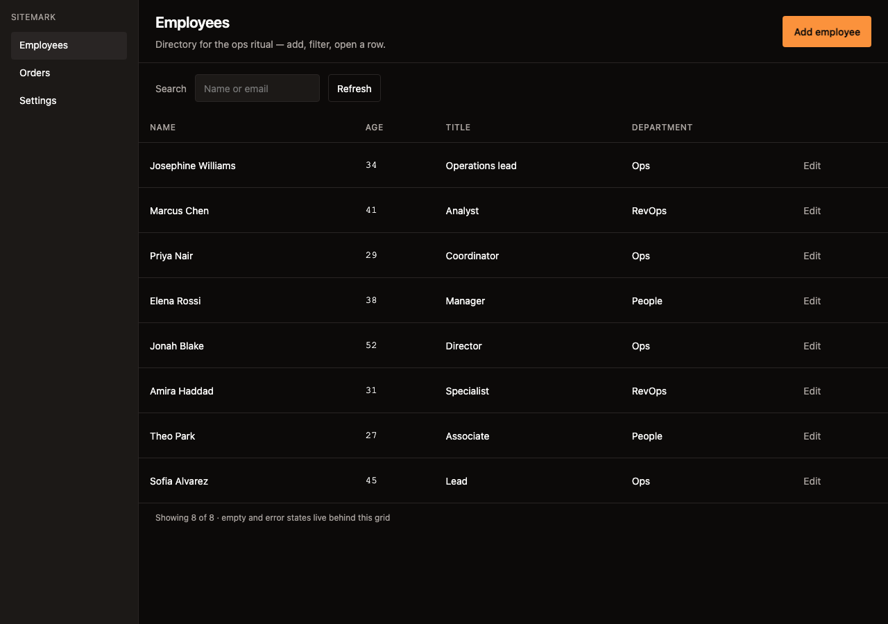
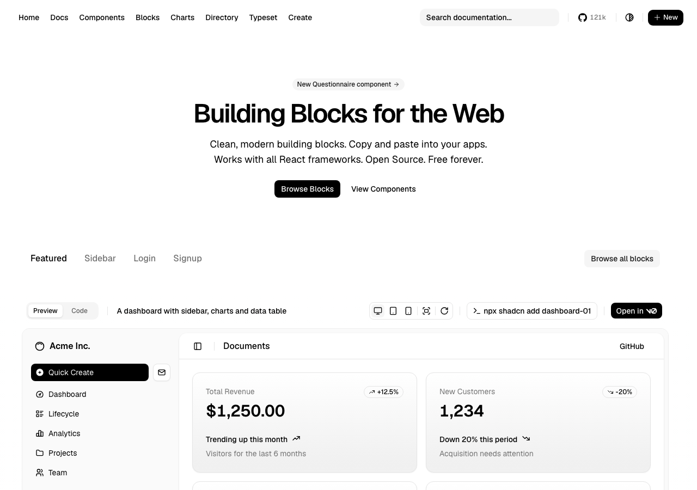
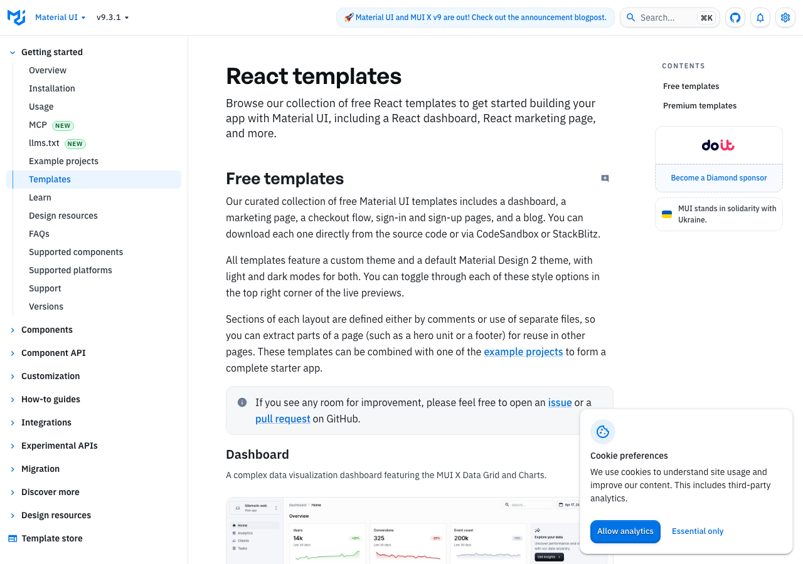
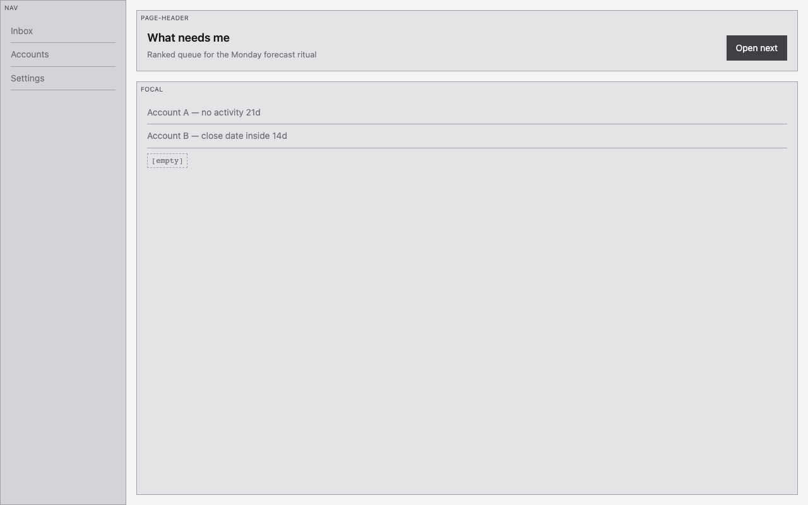

A design system agents can’t deviate from
Everyone tries to give the model taste. Cheaper: take away its room to be wrong. New pages start from a real template. Paint is shine tokens. Proof is a measured box.
The tokens are the tell, not the components
Generated UI has a look, and everybody blames the wrong suspect. The component library is fine. The look is every project on earth shipping the same default token values.
Across eighteen products whose production CSS I pulled apart, every reference-grade accent sits between OKLCH chroma 0.13 and 0.24. Tailwind’s -600 row runs 0.245–0.288 — hotter than the entire set. That gap is the “unearned saturation” tell, and every generated page you’ve winced at is wearing it.
You can’t prompt taste into a default. You can delete the default. Wipe the palette and the default type/tracking/shadow scales, own the token layer, enforce it against rendered pixels — never against source code.

4.5 MB of production CSS
Linear, Stripe, Vercel, Notion, Raycast, Clerk, Resend, Superhuman, Things, Liveblocks, Dia, Observable and more — stylesheets fetched, tokens extracted, statistics run. Numbers don’t have opinions. These are the ones that survived verification.
| Finding | Value | Why it matters |
|---|---|---|
| Duration mode | 150ms | The single most common transition duration across the entire corpus. Micro-feedback clusters at 50–80ms; overlays at 200–300ms. Exits run about 20% faster than entrances. |
| Adjacent surface delta | ~2pp | Lightness difference between stacked surfaces, measured range 1.6–3.9 percentage points. Separation is carried by the border, not the fill. Six or more is a smell. |
| Type scale | 2 ratios | About 1.12 through the UI band (11–24px) and 1.22 for display sizes. Not one ratio. A single 1.25 applied from 12px up produces the broken 12→15→18.75 ladder that reads as generated. |
| Top shadow alpha | ≤6% | In light mode. Two layers minimum; any layer blurred 8px or more carries a negative spread of roughly −blur/4. Dark mode is the same geometry at about 4× the alpha. |
- Tracking is a function of size and weight, not size alone. At 32px, regular weight takes about 1.6× more negative tracking than bold — lighter strokes leave more apparent counter-space and need pulling tighter. Tracking crosses to negative around 20–24px and reaches −0.02 to −0.035em by 48px. Uniform
letter-spacing: 0across every size is one of the loudest tells there is. - Line-height peaks at body size and falls in both directions. Roughly 1.33 at 12px, 1.5–1.6 at 15–16px, 1.0 at 64px. The floor holds at about 1.33 — dense interfaces cut padding, never leading.
- Radii nest as
child = parent − padding, and this ships as literalcalc()in production. Corners that don’t run parallel are visible even when nobody can say why.

- Elevation is a hairline ring plus blur layers plus a background-colored ring. A bare drop shadow leaves a mushy edge no amount of blur tuning fixes.
- The hypothesis that grays must be tinted is only 7-of-12 true. Vercel and Observable run chroma of exactly zero, deliberately. The real invariant is hue consistency across the ramp, not hue presence. Where ramps are tinted, saturation rises as lightness falls.
The skill
One git-tracked directory both Claude Code and Cursor symlink. The index is 252 lines, ~14 KB — still inside the 5,000-token window that survives compaction — so catalog cite and the non-negotiables sit at the top. Twenty-seven references load from disk when a task touches them: catalog, contracts, techniques, adoption, the audit rubric, 40 checkable rules, a failure taxonomy of 84 tells written so a program can detect each one. Dedicated executor: shine-ux. Five wirings: per-edit lint, stop-sweep, and the doctor, each on both surfaces. A gate that is not in the doctor does not exist.
A path-gated skill is an absent skill. This one used to list tsx,jsx,css,html, so it never loaded for UI inside Python, and Brutus shipped 56 raw hex values one glob away from the design authority. Frontmatter is name + description only. Never paths:. Design-lint keys on content, not extension — HTML inside a .py counts.
New surfaces start in Wireframe (interactive discovery → gray-box from a catalog id → locked brief). Existing surfaces run diagnose → cite → fix → remeasure. Six modes: Wireframe, Build, Polish, Audit, Copy, Adoption. Voice is a layer on a surface that speaks, not a seventh mode. Ambiguity defaults to Wireframe if there is no UI yet, otherwise Build. Two lanes, brand and personal — brand and mode swap in the token layer, never in markup. The committed brand lane is placeholder values on purpose; a real palette arrives via SHINE_BRAND_OVERRIDE / brand.local.md, never this tree. House style: dark-first, dense, instrumental, editorial type. Light is derived, never hand-authored.
skill/ lines
SKILL.md 252
references/
adoption.md 158
ai-surfaces.md 160
anti-patterns.md 126
audit.md 95
brand.md 84
color-type.md 217
contracts.md 371
copy.md 148
corpus.md 109
dashboards.md 220
dataviz.md 126
diagnose.md 144
ecosystem.md 154
foundations.md 193
imagegen.md 60
inspiration.md 53
kits.md 115
motion.md 223
patterns.md 213
performance.md 121
salesforce.md 196
taste.md 224
techniques.md 90
templates.md 152
verification.md 280
voice.md 119
wireframe.md 195
4,598
- Catalog cite required. A new page names a
templates.mdid before a pixel is drawn. Copy that template’s structure; shine-paint. Inventing a layout is incomplete — same status as shipping no measure numbers. A build that cannot name a catalog id is not done. 117 rows (98 shadcn-registry, 10 MUI, plus Tremor, Ant Design Pro, Mantine, Chakra, HeroUI, …); no row → fill the catalog, then build. - New surfaces start in Wireframe. Gray-box HTML from the catalog id, then a locked
*.brief.md. Build honours the brief and does not re-open structure unless you sayunlock structure. - Internal tools get Adoption before pixels. Name the meeting the screen runs, what each persona learns here that they cannot get by asking a person, and the path from notification to committed change. A surface nobody opens is a design defect.
- A component name is a complete contract. “Table” means toolbar, sorting, pagination, sticky header, selection, empty, loading and error states, keyboard access — not bare markup. Opting out takes an explicit “simple”.
- Reports state the numbers used. “Improved the spacing” doesn’t qualify. “Moved 13px → 12px onto the 4px scale; contrast 4.05:1 → 7.2:1” does.
- Every surface is an argument. The Copy mode renders Hormozi’s value equation as five beliefs a buyer must feel — it gets me the outcome, it will work for me, I’ll see results soon, it’s easy to implement, it’s worth it and I trust who’s behind it — and demands the element that carries each one. A belief with no carrying element is a copy gap, the same status as a token gap. Ten copy slop tells sit beside the twelve visual ones.
- A voice layer is a summarizer with manners, never a screen reader. Nothing leaves the speaker that a colleague wouldn’t say across a desk: no paths, no hashes, no “Jul” read as Jewel. While the surface is speaking, the mic honors only the transport family — the synthesized voice can pronounce your own nav keywords.
- The pins are part of the knowledge.
@tanstack/react-table@9landed 2026-08-04 and breaks everything — pin^8.class-variance-authoritystalled in 2024;tailwind-variantshas the slots multi-part components need. Base UI renamed itself mid-RC. No training data keeps up with this; a file on disk does.
What’s in force
- Corpus. Real library source on disk, so the model never invents a prop signature. Queried with ripgrep — these are exact symbol lookups, not a semantic-search problem. 49 pins, ~1.2 GB sparse. Shipped.
- Tokens. One DTCG source emitting to nine targets: CSS custom properties, a Tailwind v4
@themeblock, an inline<style>for CSP-locked artifacts, a constant for a Python-served app, an email inliner map plus a bulletproof table-based starter, a Google Docs Apps Script, OOXML theme slots for the Office writers, and a Salesforce brand-palette spec whose 17 reference steps keep SLDS’s own lightness ladder re-seeded with the brand hue. Proven the honest way: mutate one token, watch every target change by computed value — the email starter is rendered and measured, not grepped — then migrate a multi-page site's duplicated:rootblocks to one import, screenshot-diffed to zero differing pixels. - Registry.
@shineat /r/ — aregistry:baseplus two theme lanes, generated fromtokens/distso it cannot drift.npx shadcn init https://shine-blond.vercel.app/r/shine.json, thennpx shadcn add @shine/<item>. Proven into a clean Vite project: computed values match source in light and dark. Shipped. - Knowledge. Component contracts, plus the template catalog, plus the positive taste reference the measurements produced. Shipped — the section above.
- Enforcement. A lint hook on every write. The model can decide to ignore a skill; it cannot decide to ignore a hook. Shipped — design-lint and stop-sweep on Cursor and Claude Code;
doctor.mjsproves they bite. - Verification. Render, measure, critique — against pixels, not source. Shipped —
measure.mjsreads computed style, axe, and per-pixel contrast. GitHub Actions on this repo is dormant; the local doctor is the gate.
Constraints
Never ship a raw value where a token exists. No hex, no rgb(), no arbitrary Tailwind, no off-scale spacing, no ad-hoc font size, letter-spacing, or box-shadow. Token gap → fill gen-source.mjs and add the rule that reads the property, in the same change. Pragmas name the one rule (shine-lint: off shadow); a bare off is almost never right.
Wipe the default palette — and the default scales. In Tailwind v4, --color-*, --text-*, --tracking-*, and --shadow-* all go to initial. text-4xl and shadow-lg are the anti-pattern wearing a token-shaped name.
Do not vendor that wipe into an app already built on Tailwind defaults. It deletes the product — every bg-blue-600 and text-4xl becomes a missing utility. Keep shine token values; skip the wipe file. Restoring the defaults is the repair. Shine-painting the existing screens is not.
Split primitives from semantics, bridged by @theme inline. Components only ever say bg-surface text-fg. Omitting inline is the single most common cause of “dark mode doesn’t switch.”
Per-element checks can pass while the screen is broken. Composition is a separate gate: voids, colliding type steps, undeclared theme, missing or competing filled primaries. Wireframe gray-boxes are exempt from craft hard-fails until Build; structure still applies.
A consequence: single-file artifacts get hand-written CSS, not a framework. Nesting and :has() went Baseline in June 2026, light-dark() halves the theming code, and data-variant attributes give a variant API identical at the call site. Zero build, zero FOUC, and the tokens are the artifact.
This page is built to those rules. Both themes come from one token set; the toggle swaps a single attribute.
Using is not redistributing
Everyone assumes component kits are MIT. The popular ones increasingly aren’t, and the difference only bites on the day you ship one inside something you publish.
| Source | Actual position |
|---|---|
| Aceternity UI | No license at all. No public repo, no LICENSE file. Terms claim ownership of all material and forbid redistribution. |
| React Bits, Animate UI | MIT plus Commons Clause — explicitly bars redistributing the components "alone, in a bundle, or as a ported version." |
| Origin UI | Transferred and relicensed. Now AGPL-3.0 by default, with a narrow MIT carve-out. |
| GSAP | Genuinely free for commercial use, but not OSI. No forking, no redistribution, and it bars use in competing animation tools. |
| Apple HIG | Copyrighted with no license grant. Read it; never copy from it. |
Clean to build on: shadcn/ui, Radix, Base UI, Mantine, Chakra, HeroUI, Headless UI, Blueprint, D3, Recharts, visx, nivo, Magic UI, Motion Primitives, Kibo, Tremor. Polaris is query-only (Shopify visual-distinctness). Paid stores without an Atlas license — Haze, Prime, MUI Store, AdminLTE commercial — stay query-only screenshots, never clones.
Three of the four defaults are drifting
Reputation and maintenance have come apart here. Checked against release history and commit authorship, not stars.
| Library | Last release | State |
|---|---|---|
| visx | 2026-06 | Modernization release, zero new packages. One engineer wrote 56 of the last 100 commits. One published package is versioned but was never actually published to npm. |
| nivo | 2025-05 | 24 commits sitting unreleased. Fixes land on master and never reach users. |
| D3 | 2024-03 | Frozen because finished — it is mostly math, and math doesn’t rot. But the type definitions are 33 months stale, which costs more day to day than the runtime does. |
| Observable Plot | 2025-02 | 42 unreleased commits, and a merge-clean release PR that has sat untouched for four months with the changelog already written. |
| Recharts | 2026-07 | 55M downloads a week, commits landing today, and already what shadcn’s chart components wrap. |
visx and nivo occupy the same slot — React chart libraries over d3, differing only in how opinionated they are. Owning both buys two theming systems and two bundles. The call: depend on D3 for math and server-side rendering plus Recharts for React, and hold visx in reserve for genuinely custom work. Vendor all of them for reference regardless; vendoring is not depending.
Measure the box
Grepping generated CSS for a token name proves nothing. The string can sit there — present, correct, completely inert — while the browser computes something else. Read the box, not the source.
The loop: render in Playwright, read getComputedStyle and getBoundingClientRect across every visible element. UI-band font sizes are capped at the six-step token scale; display sizes (≥32px) are counted separately, max two. Off-scale spacing values are capped at three. Composition hard-fails independently: voids, colliding type steps, undeclared theme, missing or competing filled primaries, app-shell density. Then accessibility, then contrast, then a screenshot critique capped at three passes. --shot is required on Build; the report names the catalog id. Zero measurements is a fail — a probe that finds targets and measures none of them is reporting that it is broken. Resolve colour by painting it, never by parsing a string; this page is OKLCH throughout and a regex that only sees rgb() would skip every element and print PASS.
node verify/doctor.mjs is the gate. --ci is 26 checks; the session-start doctor also proves both surfaces’ skill, shine-ux, and hooks. --full runs composition fixtures (launches Chromium). GitHub Actions on this repo is dormant; a green CI check that never started is not a pass.
The finding that justifies the whole loop
Given text over a gradient, axe-core returns incomplete — not pass, not fail. It declines to answer, because it cannot resolve a single background color. Which means the most common contrast failure in real design work is precisely the case the accessibility tool refuses to judge.
The fix is to hide the text, screenshot clipped to its exact box to capture pure background pixels, decode in-page, and contrast the known foreground against every pixel. Report worst case and 5th percentile, never the mean — a gradient that passes on average still has an unreadable end. On a real page this returned 1.00:1 where axe had said nothing at all.

- Wait for
document.fonts.readybefore measuring anything, or you measure fallback-font geometry and every number is wrong. getComputedStyle().colorreturnsoklch(), notrgb(). Regex the string as RGB and every contrast ratio comes back ~1.0 — a false reading my own harness produced before it became a rule. CanvasfillStyledoesn’t normalize it either; rasterize to a 1×1 canvas and read the pixel back.- Measuring during a transition captures the interpolated value. Inject
transition: noneeverywhere before sampling. And HTTP 200 is not proof a page loaded — it can be an auth wall wearing a success code. - Automated accessibility catches about 57% of issues by the vendor’s own study — 98% for contrast, but 2.49% for keyboard navigation. Green is not clean.
- Screenshot self-critique plateaus after three passes. Published work measures +17.8% over three cycles and finds fine-tuning captured only a quarter of the benefit. The loop does the work, not the weights — so run it last, once the deterministic checks have already caught what they can.
Start from a real page, not a poster
A Linear tracking cite is paint. It does not authorize inventing a dashboard. New pages start from a row in templates.md — copy the regions, shine-paint, never clone vendor pixels. Technique numbers (15px body, 150ms, chroma 0.13–0.24) still come from measuring what shipped. Structure comes from a catalog id.
Dribbble and Behance stay out. Partly the terms — scraping is prohibited and each shot is copyrighted by an individual designer, so there is nobody who could grant rights even in principle. But mostly because shots are posters, not software. No empty states, no error states, no 200-row tables, no keyboard navigation, fake data at conveniently perfect lengths. Training on that produces work that photographs well and falls apart on contact with real content.
The catalog is SPDX-clean source already on disk: MUI free templates, shadcn blocks, Tremor, Ant Design Pro, Mantine, Chakra, HeroUI. Paid stores without a license (Haze, Prime, MUI Store, AdminLTE commercial) are query-only screenshots, never clones. No row for this screen → add one, then build. Do not invent.
Facts still aren’t copyrightable: “this product’s body text is 15px at 1.6 line-height with −0.011em tracking” is an observation, not an appropriation. Design systems that publish real numbers under real licenses — IBM Carbon, GitHub Primer, Material 3, the US Web Design System — remain the richest sources for those numbers. They do not skip the catalog.




Scope, decided
These looked like holes when the page was a plan. They have rulings. In the original order:
- Imposed design systems. In, as a palette target — proven against the hardest case. Under SLDS 2 the old Salesforce design tokens are deprecated, overriding global styling hooks is prohibited, and there is no org-wide CSS injection point. But the token chain resolves through ~17 brand reference steps, and overriding those recolors the accent system across every component. Salesforce publishes the contract itself: DTCG JSON, 717 tokens, dark values, per-token allowlists. The deliverable is a palette spec an admin transcribes. Our colors on their system, never our system on theirs.
- Office formats. In, Google Docs first. Docs has no CSS and no token API, so the emit target is an Apps Script applying named paragraph and character styles, plus a template doc carrying the palette. The Office writers follow, repointed at the shared token source instead of hardcoded hexes.
- Email. In. One of nine emit targets: tables, inline styles, no custom properties, no flexbox in Outlook. Tokens compile through a literal-value inliner. The renderer is the constraint, not the design.
- Interface copy. In. A conventions file for labels, errors, empty and loading states. Cheapest fix here, and one of the loudest tells.
- Keyboard choreography. In, as contracts checked by review. Focus order, traps and escape behavior were already in the ported component contracts. Automation catches 2.49% of keyboard issues — a linter can’t hold this standard; a document can.
- Illustration and imagery. Filled. Anti-stock by rule: real product surfaces, generated texture, data as ornament, typographic covers — no people pointing at laptops. Generation runs locally when a surface needs texture — 4-bit schnell for drafts, 8-bit dev for finals. Plates on this page sit beside the claim they prove, not as a masthead hero. Catalog shots are structure sources; shine-paint is ours. A generated hero with no claim next to it is the tell the rest of the skill exists to kill.
- A performance budget. In, twice over. CSS ≤ 20 KB gzip; JS ≤ 40 KB for an app route, zero for a document. The same discipline is the context budget: a 252-line index (~14 KB) still fits the 5,000-token reattach window; references cost zero tokens until read.
Nothing on that list is still open. The registry — the thing this page used to leave hanging — shipped 2026-08-05. An app still on its own palette is that app’s migration (sync-consumers vendors the tokens). Shine does not become unfinished because a consumer hasn’t imported them.